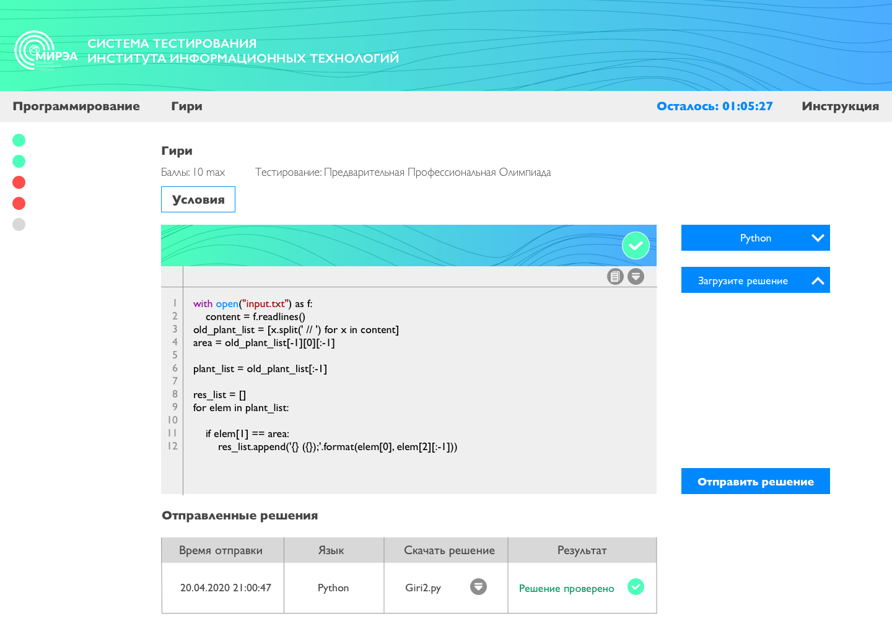

<div class="overview">
    <div class="container">
        <div class="header">Общие положения</div>
        <p>Решение каждого задания - это файл с исходным кодом программы, объемом не более 5 МБ. Исходный код будет скомпилирован и выполнен с различными наборами входных данных. Если отправленное решение отработает некорректно, то система выдаст соответствующее сообщение.</p>
        <p>Время на выполнение программы - 1 секунда. Превышение временного лимита автоматически приводит к состоянию "Решение выполнялось слишком долго". Отправлять решения можно только <b>1 раз в минуту</b></p>
        <p>Во всех задачах используется стандартный поток ввода и вывода (консоль).</p>

        <app-lang-info></app-lang-info>

        <div class="header">Индикаторы отправленного решения</div>
        <div class="indicators">
            <div class="indicator red">
                
                <span>Ошибка при компиляции</span>
            </div>
            <div class="indicator red">
                
                <span>Ошибка во время выполнения</span>
            </div>
            <div class="indicator red">
                
                <span>Решение выполнялось слишком долго</span>
            </div>
            <div class="indicator blue">
                
                <span>Решение в очереди на проверку</span>
            </div>
            <div class="indicator blue">
                
                <span>Решение проверяется</span>
            </div>
            <div class="indicator green">
                
                <span>Решение проверено</span>
            </div>
            <div class="indicator blue">
                
                <span>Решение принято</span>
            </div>
        </div>
        
        <div class="header">Как отправлять задания</div>
        <p>Для отправки задания текст кода должен находиться в файле, например "Program.pas". После отправки программа отобразится в таблице отправленных решений и с течением времени изменит свой статус в следующем порядке:</p>
        <div class="instruction">
            
            
            
            <div col1 id="line1"></div>
            <div col2 id="line2"></div>
            <div col1 class="blue">Решение в очереди на проверку</div>
            <div col2 class="blue">Решение проверяется</div>
            <div col3 class="green">Решение проверено</div>
        </div>

        <div class="header">Пример правильно решённого задания</div>
        <div></div>
    </div>
</div>
